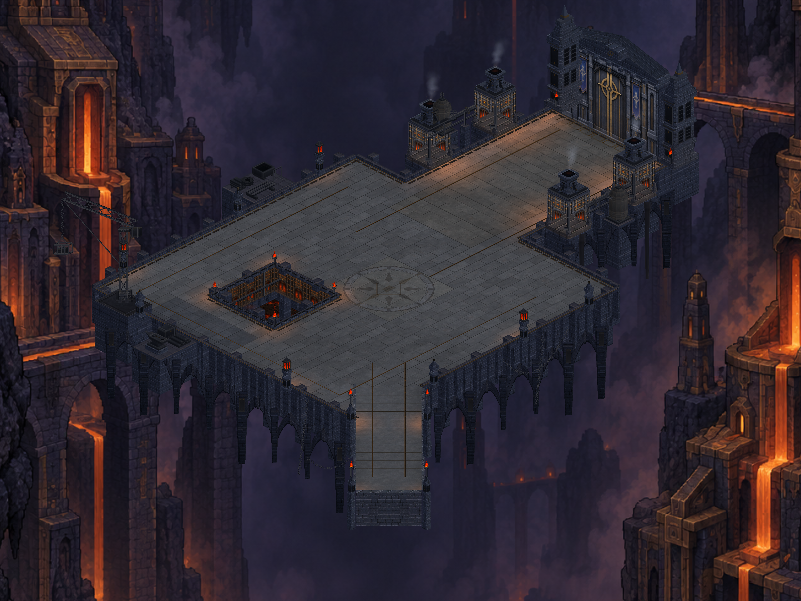

CRYPTFORGE / 29 EYLÜL 2026
Dökümhane basınç tankları
İki basınç tankı, taş kaideler, metal gövdeler ve mevcut ana boruya bağlantılar. Gerçek Unity görüntüleri.

17 statik çizim grubu · 59.584 köşe. Bu paket S23 cihazına yüklendi; kısa hareket ve görsel kontrol yapıldı. Hareket alanı ve savaş kuralları değişmedi.
Telefondan gerçek tank görüntüsü
Üretim ve doğrulama notları